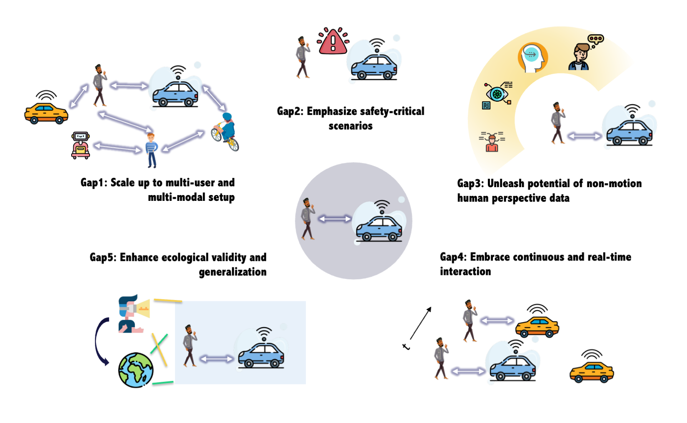

Literature Review · 2025
Published in Transportation Research Part F: Traffic Psychology and Behaviour
1 DTU, Denmark 2 NII, Japan 3 Aalto University, Finland 4 University of Helsinki, Finland
Urban transportation is set to undergo a profound transformation with the advent of autonomous systems such as autonomous vehicles🚗, automated shuttles🚌, and sidewalk delivery robots🤖. To promote safe, sustainable, and inclusive urban mobility, understanding and predicting the behaviors of pedestrians🚶 and cyclists🚴 when they interact with autonomous systems becomes crucial.
Through a comprehensive review of the literature spanning 2014 to 2023, we identify 99 articles that empirically investigate human–autonomous system interactions through controlled experiments. Based on our overview of progress and challenges, we identify five research gaps that future work should address: (1) Experiment scalability: scaling up to multi-user and multi-modal design, (2) Scenario criticality: emphasizing safety-critical VR scenarios, (3) Data diversity: incorporating rich behavioral data from human perspective, (4) Interaction adaptability: embracing continuous real-time interaction, and (5) Generalization: enhancing generalization ability across diverse populations and settings.

Identified research gaps
| Paper | Method | Sample | Road Users | Scenario Setup | Criticality | Input Factors | Behavior Indicators | Behavioral Model |
|---|---|---|---|---|---|---|---|---|
| Loading studies… | ||||||||
@article{li2025analyzing,
title = {Analyzing the Behaviors of Pedestrians and Cyclists in Interactions
with Autonomous Systems Using Controlled Experiments: A Literature Review},
author = {Li, Danya and Mao, Wencan and Pereira, Francisco C. and
Xiao, Yu and Su, Xiang and Krueger, Rico},
journal = {Transportation Research Part F: Traffic Psychology and Behaviour},
year = {2025},
}